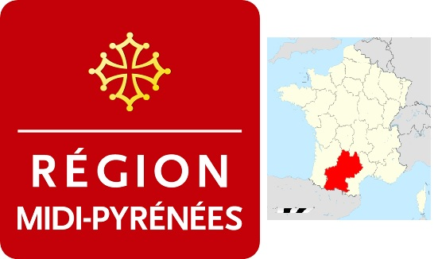
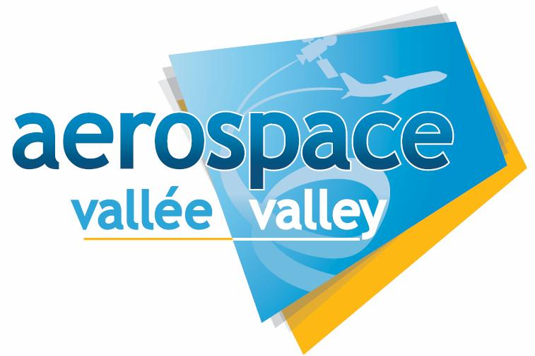
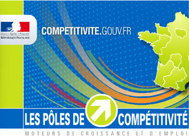
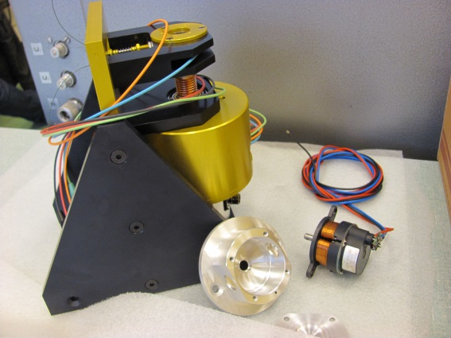
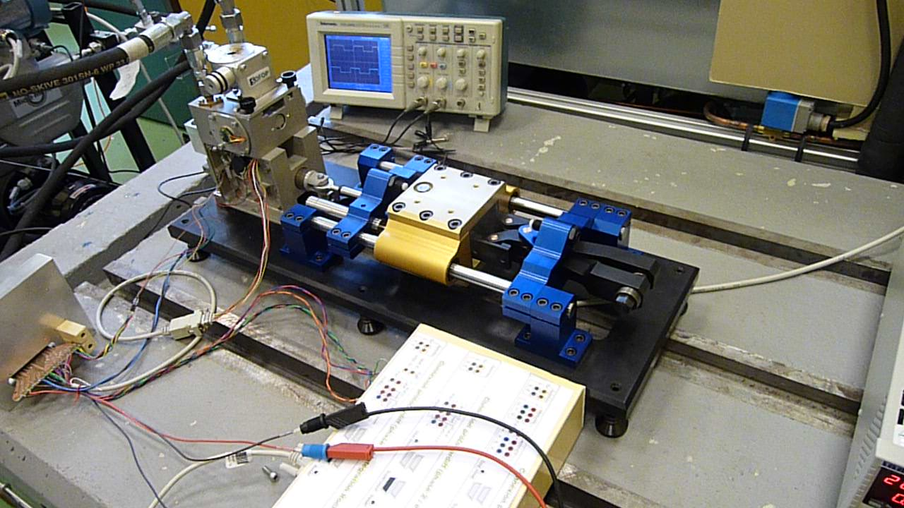

|
 |
|
 |
 |
SYRENA
Le projet SYRENA (SYstème de REgulation Nouvelle Architecture) a pour objectif de proposer et de démontrer les performances de solutions innovantes pour les systèmes de régulation carburant des turbines aéronautiques. Il s’agit en particulier de se différencier des concurrents au travers :
De l’intégration de concepts innovants basés sur des technologies connues de l’aéronautique
De transfert de technologies en rupture provenant d’autres domaines industriels
De l’exploration d’architectures systèmes plus modulaires et alternatives aux solutions double-canal actuelles, basées sur les nouvelles technologies de communication.
Dans le cadre de SYRENA, des briques technologiques de maturité TRL 6 sont développées, intégrées au sein d’une architecture système innovante TRL5, validée sur un Banc Partiel. Ceci passe notamment par une redéfinition des frontières établies entre architectes système et équipementiers, en amenant les partenaires du projet à une réflexion « besoin fonctionnel », afin de bâtir une vision commune et partagée des meilleurs compromis technologiques et architecturaux, et ceci à fin de prendre en compte simultanément :
les futures exigences environnementales, qui conduisent à revoir les stratégies de pilotage moteur et les systèmes d’actionneurs (pilotage multi-variables des débits air et carburant), à recycler les rejets d’hydrocarbure au niveau moteur, à supprimer certains composants chimiques et réduire fortement la masse du système de régulation.
les futures exigences de sécurité des vols, en particulier pour applications monomoteur.
les demandes croissantes des opérateurs en termes de maintenance prédictive et de maintien en conditions opérationnelles.
Le projet SYRENA, soutenu par le pôle de compétitivité Aerospace Valley est coordonné par Turboméca (groupe SAFRAN). D’une durée de 36 mois de 2010 à 2013, il associée 4 grand groupes industriels, 10 PME de Midi-Pyrénées et Aquitaine et 8 laboratoires pour un budget total de 12.9 M€.
L’Institut Clément Ader est impliqué dans SYRENA à travers le thème Actionneurs Embarqués qui est développé au sein de l’axe Ingénierie des Systèmes et des Microsystèmes du groupe Modélisation des Systèmes et Microsystèmes Mécaniques. L’institut Clément Ader est en charge de la conception préliminaire (définition des architectures de puissance et dimensionnement) des versions électromécanique et électrohydraulique de l’actionneur de pilotage d’entrée d’air. Il contribue activement à la définition, à la conception, à la réalisation, à la mise en œuvre des moyens d’essais partiels utilisés pour valider les concepts et leur mise en œuvre technologique. Ce projet apporte à l’Institut Clément Ader un cadre applicatif réaliste pour ses travaux de recherche sur la définition de processus d’ingénierie des systèmes et de conception basée sur les modèles pour les systèmes d’actionnement critiques embarqués.
Le projet SYRENA, soutenu par le pôle de compétitivité Aerospace Valley, est financé dans le cadre du 10e appel à projet du Fonds Unique Interministériel. Pour sa contribution, l’Institut Clément Ader est doté de 291 k€ dont 88 k€ sont issus de la Région Midi-Pyrénées et 203 k€ sont financés par la Banque Publique d’Investissement.
|
 |
 |
|
Banc d’essai de moteur couple à débattement limité |
Démonstrateur d’actionneur de pilotage d’entrée d’air avec son système de chargement |
Responsable scientifique pour l’ICA : Jean-Charles MARE, contributeurs : Marc BUDINGER, Ion HAZYUK et Stéphane ORIEUX